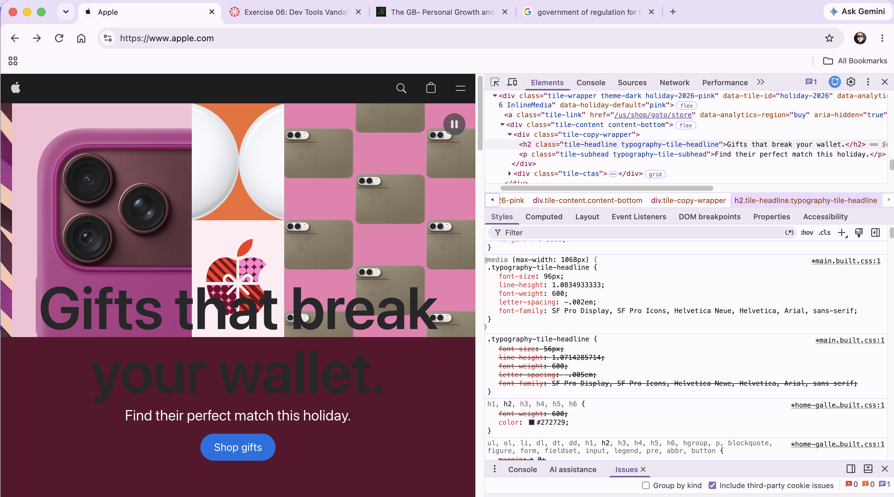

My Dev Tools Vandalism: Apple Website
I used the browser developer tools to change the header of the main page from Gifts for Everyone to Gifts that will break your wallet. I changed the color of that heading to the black color and increased the size to 96. I had no idea that I was able to edit a site with the developers tools.

What I "Vandalized"
Describe the changes you made to the website using the browser's developer tools. Some potential questions to consider:
- What text did you edit?
- What CSS properties did you modify?
- What made your edits interesting or amusing?
- Did you understand why some changes worked and some didn't?
- Why did you choose the changes you did?
- Were you able to understand how the HTML and CSS worked together to make the changes you made?
- Do you think you have a better sense of how dev tools can be used while crafting your own webpages?